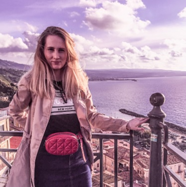

НОВАКОВСКАЯ ЭЛЛИНА СТАНИСЛАВОВНА
Дата рождения:05.09.1994, 23 года
Пол: женский
Семейное положение: не замужем
Адрес: г. Минск,ул.Филимонова 55/3, кв. 29
Телефон: моб. +375 44 7 349 349
E-mail: novira@tut.by
